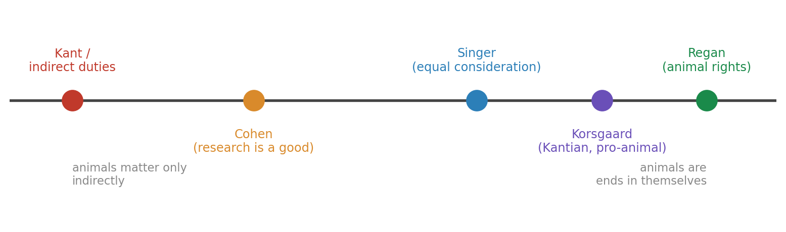

Lecture 12 — Animal Ethics
Part A: Moral Status of Animals and the Ethics of Research
Brendan Shea, PhD
An Introduction to Bioethics.
Every Drug You’ll Ever Give
A Case to Sit With
You just joined your hospital’s animal-research committee. Your first protocol asks to test a new painkiller — one that could help your own patients. The plan: first in mice, then, if it works, in a small group of monkeys, who will be euthanized at the end so their nerve tissue can be studied.
You will administer this drug to humans someday if it passes. Tonight you vote on whether it gets made.
- What would you need to know before voting yes?
- Is there any version of this study you would refuse to approve, no matter the benefit to patients?
- Does it matter that the test animals are monkeys rather than mice? Why or why not?
After You’ve Discussed
Note
Most people who use a medicine without a second thought hesitate when asked to approve the research behind it. That hesitation is not hypocrisy — it is two real duties pulling apart: a duty to the patients who need the drug, and a duty to the animals who pay for it.
This lecture gives you tools to hold both at once: a way to ask which animals matter, how much, and what that permits — instead of choosing a slogan and defending it.
Today
By the end of Part A, you will be able to:
- Define moral status and speciesism, and explain the “argument from marginal cases.”
- Lay out three views — Kant’s indirect duties, Singer’s utilitarianism, and Regan’s rights view — and say what each implies in practice.
- Trace the dispute from Singer through Regan, Cohen, and Korsgaard as a connected argument.
- State the 3 Rs (Russell & Burch, 1959) and describe how an IACUC reviews animal research.
- Explain why primate research is used and contested, and what the 2015 NIH chimpanzee decision changed.
Who Counts?
What “Moral Status” Means
Before we ask how to treat animals, we need a prior idea: moral status.
- A being has moral status when it matters for its own sake — when we owe duties to it, not just duties about it.
- A rock has none: you can do as you like with it. A person has full moral status: you must weigh their interests.
- The whole debate is about what earns status, and how much. The usual candidates are being alive, being sentient (able to feel pain and pleasure), and being rational or self-aware.
Pick a criterion and you have, without noticing, sorted every living thing into “counts” and “doesn’t.”
Speciesism — the Word and the Charge
In 1970 the psychologist Richard Ryder coined speciesism; Peter Singer made it famous (Singer 1975).
The charge. Giving less weight to a being’s interests just because it belongs to another species is like racism or sexism — a bias for “our own kind” dressed up as a principle.
A pig’s pain, Singer argues, is as real as a person’s. To discount it only for being a pig’s is the error.
The reply, in advance. Defenders answer that species membership does track morally real differences — in rationality, in moral agency, in belonging to a moral community.
Whether that reply works is the question the rest of the lecture argues about.
The Spectrum of Views
The same facts about animals support very different conclusions. The disagreement is about the criterion, not the biology.
The Argument from Marginal Cases
The hardest problem for any view that draws the line at rationality.
- Suppose moral status requires reason, language, or planning for the future. Many adult animals lack these — so, the line says, they don’t fully count.
- But some humans lack them too: newborns, people with advanced dementia, those with severe cognitive disability. They are the “marginal cases.”
- We rightly give these humans full moral status. So either the criterion is wrong, or we must explain what makes the human cases different without simply saying “because they’re human” — which would be speciesism.
This argument doesn’t settle the debate. It forces every side to say exactly why its line falls where it does.
Three Answers
Kant: We Owe Animals Nothing Directly
The oldest Western view says animals have no moral status of their own (Kant 1997).
- For Immanuel Kant, only rational agents are “ends in themselves.” Animals are not rational, so we have no direct duties to them.
- But we do have indirect duties: duties about animals that are really duties to humanity. Kant’s example — a man who shoots his old dog because it can no longer work does nothing to the dog, but “damages in himself” the kindness he owes other people.
- The practical upshot: cruelty is wrong because it corrupts us and coarsens how we treat each other, not because the animal was wronged.
This view still shapes law that bans cruelty while permitting nearly any use.
Singer: Equal Consideration of Interests
Singer turns Kant’s criterion on its head. The question, he says, quoting Jeremy Bentham, is not “Can they reason?” but “Can they suffer?” (Singer 1975)
The Equal-Consideration Argument
After Peter Singer, Animal Liberation (1975)
- If a being can suffer, it has an interest in not suffering.
- Equal interests deserve equal moral weight, whoever has them.
- Many animals can suffer as humans can.
- So their suffering counts equally — and discounting it for being an animal’s is speciesism.
Singer is a utilitarian: what matters is the total balance of suffering and well-being. The disputed premise is 2 — whether equal interests always deserve equal weight.
What Follows from Singer
One premise, sweeping consequences — which is why the view is famous and feared.
Factory farming fails immediately: it inflicts enormous suffering for the minor interest of cheaper meat. For Singer this is the clearest case of all.
Research is harder. Singer does not ban it outright. He asks the brutal question: would you do the same study on a human with similar mental capacities? If not, doing it to the animal needs another justification.
Note what utilitarianism allows: if a study truly produced enough benefit, the math could favor it. That possibility is exactly what the next thinker rejects.
Regan: Animals Have Rights
Tom Regan thought Singer gave animals too little protection. Utilitarian math can always, in principle, sacrifice the individual for the greater good (Regan 1983).
The Rights View
After Tom Regan, The Case for Animal Rights (1983)
- Many animals are subjects-of-a-life: they have beliefs, desires, memory, a sense of the future — a life that goes better or worse for them.
- Any subject-of-a-life has inherent value, not just usefulness to others.
- Beings with inherent value have a right not to be harmed merely as a means to others’ ends.
- So using animals in research violates their rights — even if the results help many.
Where Singer weighs and balances, Regan draws a line: rights are not for trading. The dispute now moves to premise 2 — can animals really be bearers of rights?
Cohen: The Case for Animal Research
The sharpest reply came from a philosopher writing in a medical journal. Carl Cohen defended both speciesism and research — on purpose (Cohen 1986).
Cohen’s Reply
After Carl Cohen, “The Case for the Use of Animals in Biomedical Research” (1986)
- Rights arise only among beings who can make moral claims on one another — members of a moral community.
- Animals cannot recognize duties or weigh right and wrong, so they hold no rights.
- We should favor our own species, just as we favor our own children; this is moral, not bias.
- So humane, well-regulated animal research is not only permitted but a moral good, given the human lives it saves.
Cohen bites the bullet on marginal cases: rights belong to humans as a kind, even those who can’t exercise them. Whether that move escapes speciesism is the soft spot critics press.
Korsgaard: A Kantian Turn
Here is the twist. Christine Korsgaard is a leading Kantian — and she argues Kant got animals wrong (Korsgaard 2018).
- Kant said we value ourselves as “ends in ourselves” because things matter to us. But things matter to animals too: a creature to whom its own life is good is, in Kant’s own terms, an end in itself.
- So the Kantian framework, followed honestly, yields direct duties to animals — not Kant’s mere indirect ones.
- Her phrase for them: our fellow creatures. We are not their superiors weighing their usefulness; we share a world with beings whose good is real.
Korsgaard shows the pro-animal conclusion needn’t rest on utilitarianism or on rights talk — even Kant’s own theory, repaired, gets there.
Four Views, Four Verdicts
| Eating meat | Animal research | Pets | Wildlife | |
|---|---|---|---|---|
| Kant / Cohen | permitted | permitted, even good | fine if not cruel | manage for human use |
| Singer | wrong (factory farm) | only if benefit clearly outweighs | fine if welfare met | reduce suffering overall |
| Regan | wrong | wrong, full stop | guardianship, not ownership | respect, don’t exploit |
| Korsgaard | deeply troubling | rarely justified | a real relationship of duty | owed direct concern |
Read across a row to see a view’s reach; read down a column to see how much a verdict depends on the theory behind it.
Thought Question
A wildfire is closing in. In one shelter are five dogs; in another, one human stranger. You have time to open only one door before the fire arrives.
- What do you do — and which thinker (Kant, Singer, Regan, Korsgaard) best matches your reasoning?
- Singer says equal interests count equally. Does that mean five animal lives can outweigh one human life? If you resist that, why?
- Would your answer change if the one human were someone you loved? Should it?
Make It Contemporary
The science keeps moving the line. Primatologist Frans de Waal documented chimps that plan, deceive, and grieve; later work found that octopuses — invertebrates — show problem-solving and apparent pain responses (Waal 2016).
In 2021 the United Kingdom formally recognized octopuses, crabs, and lobsters as sentient beings in law, after a major scientific review.
- If sentience is the criterion, where does the new evidence push the line?
- Should the law track the latest cognitive science — or stay simpler and more stable?
After You’ve Discussed
Note
A distinction the views above quietly rely on: moral agents vs. moral patients.
A moral agent can be held responsible — can have duties, deserve blame, make claims. A moral patient cannot act morally but can still be wronged (a newborn, a dog). Cohen ties rights to agency; Regan and Korsgaard insist patients matter regardless.
Seeing the split shows why smart people reach opposite verdicts from the same facts: they disagree about whether being a patient is enough to be owed direct duties.
Mini-Recap
We started with a vote on a research protocol and stepped back to the prior question: which beings count, and how much? Kant says animals count only indirectly; Singer weighs their suffering equally; Regan grants them rights; Cohen ties rights to a moral community we don’t share with them; Korsgaard repairs Kant into a duty to fellow creatures. None is obviously right. Now we take these tools back to the lab, where the abstractions become protocols, cages, and a committee vote.
From Theory to the Lab
Why Animal Research Happens
For this audience, the stakes are not abstract — they are on your med cart.
- Insulin was isolated in dogs (1921); the first patient, a dying 14-year-old, recovered within days. Polio and COVID-19 vaccines were tested in monkeys before any human arm was offered them.
- Modern law requires animal testing for safety before most drugs reach human trials — the very trials you learned about in research ethics.
- The honest framing: animal research is woven into nearly every therapy a nurse delivers. The ethical question is not whether it helped us, but what it costs and whether each use is justified.
A Founding Scandal: The Silver Spring Monkeys
Important
Silver Spring, Maryland, 1981
A young activist named Alex Pacheco volunteered in the lab of Dr. Edward Taub, who was studying nerve damage by severing nerves in macaques’ limbs and pushing them to use the numb arms. Pacheco photographed filthy cages and untreated wounds and took the images to police.
Taub was charged with cruelty (convictions later overturned on a technicality), but the photos launched PETA and made animal research a public fight. The monkeys’ fate was litigated all the way to the Supreme Court.
The case did more than shock — it exposed that, in 1981, almost no enforceable rules governed how lab animals were housed and cared for.
When the Cost Is the Point: Harlow
Some studies harmed animals not as a side effect but as the very thing being measured.
- In the 1950s–60s, Harry Harlow raised infant monkeys in isolation to study attachment. Deprived of mothers, they clung to cloth dummies; many were left permanently, severely damaged.
- The work shaped what we know about maternal bonding and child neglect — knowledge that changed orphanage and hospital practice.
- It is also, to many, a textbook case of suffering no result could justify. Held next to Silver Spring, it frames the unavoidable question: how much harm may knowledge cost?
What the Scandals Changed
Public outrage turned into law, slowly and incompletely.
The 1966 Animal Welfare Act set minimal housing rules. The pivotal 1985 amendments, passed after Silver Spring, required institutions to form review committees, minimize pain, and provide for primates’ “psychological well-being.”
That committee is the IACUC — the body you sat on in our opening case. Two ideas drive modern oversight: a method for reducing harm (the 3 Rs) and a body that enforces it (the IACUC).
Reducing the Harm: The 3 Rs
The 3 Rs (Russell & Burch, 1959)
Years before the laws, two British scientists proposed the framework that still governs humane research (Russell and Burch 1959). The goal: not to end research, but to shrink its harm at every step.
- Replacement — use a non-animal method instead, wherever one exists.
- Reduction — use the fewest animals that still gives a valid answer.
- Refinement — change methods to minimize pain, distress, and lasting harm.
Every protocol an IACUC reviews must show the researcher has worked through all three.
The 3 Rs in Practice
| R | The question it asks | A concrete move |
|---|---|---|
| Replacement | Could this be done without animals? | cell cultures, organoids, computer models, human volunteers |
| Reduction | Are we using too many? | better statistics; sharing tissue across studies |
| Refinement | Are we causing avoidable harm? | anesthesia, pain control, humane endpoints, enrichment |
“Humane endpoint” means ending a study — and the animal’s life — before suffering peaks, rather than waiting for death as the data point.
How Far Replacement Reaches
The first R is the dream; the limits are real.
- What works now: much toxicity screening runs on cultured human cells or “organ-on-a-chip” devices; computer models predict some drug effects before any animal is used.
- What doesn’t yet: a whole living body — an immune response, a developing brain, a beating heart under stress — is hard to simulate. That is precisely where animals are still used.
- In 2022 the U.S. FDA Modernization Act 2.0 dropped the blanket requirement that new drugs be animal-tested, opening the door to validated alternatives. The science to fully replace them, though, is not here yet.
The Gatekeepers
IACUC: The IRB for Animals
You met the IRB in research ethics — the board that protects human subjects. Animal research has a mirror body.
- An IACUC (Institutional Animal Care and Use Committee) must approve every animal study at a funded institution before it begins.
- By law it includes a veterinarian, a practicing scientist, a nonscientist, and — importantly — a member from outside the institution, so the committee isn’t only judging itself.
- It can approve, demand changes, or reject a protocol, and it inspects the animal facilities twice a year. Like an IRB, it is local, ongoing, and has real veto power.
What’s Actually in a Protocol
Inside an animal-research protocol
The researcher must justify the species and exact number of animals; describe every procedure and any pain involved; and document a literature search for alternatives (the first R, in writing). Studies are graded by a pain/distress category — from no pain, to pain relieved by drugs, to the most scrutinized: pain left untreated because relief would ruin the data. That last category demands the strongest justification of all.
This is where the 3 Rs stop being slogans: the form forces a researcher to prove, line by line, that the harm is necessary.
IACUC vs. IRB: What Carries Over
| IRB (humans) | IACUC (animals) | |
|---|---|---|
| Protects | the research subject | the research animal |
| Core consent question | did the subject agree? | (animals can’t consent) |
| Substitute safeguard | informed consent, voluntariness | the 3 Rs, vet oversight |
| Shared engine | weigh benefits vs. harms; independent review; no self-policing | same |
The deepest difference is consent. A human can refuse; an animal never can. So the entire moral weight an IRB places on agreement shifts, for animals, onto someone else minimizing their harm.
The Hardest Case: Primates
Why Primates Are Used
When the question is the human brain or a human disease, our closest relatives become the most informative — and most contested — subjects.
- Neuroscience: a monkey’s visual system and cortex resemble ours closely enough to map how vision, movement, and memory work.
- Infectious disease: macaques were central to testing HIV therapies and COVID-19 vaccines, because their immune systems respond like ours.
- The same closeness that makes primates scientifically valuable is what makes using them hard to stomach.
Why Primates Are Contested
The traits that earn moral concern are exactly the ones primates have.
- Cognition: tool use, planning, deception, and self-recognition.
- Sociality: complex bonds; isolation causes lasting psychological harm.
- Longevity: a macaque can live 30+ years, a chimp over 50 — often the whole life in a lab.
Recall the spectrum: on every criterion that any theory uses — sentience, being a subject-of-a-life, a good of one’s own — primates score high.
That is why they sit at the sharp end of the debate, and why one species was singled out for special protection.
U.S. Research Animals by Species

The chart hides the biggest fact: the ~95% that are mice, rats, fish, and birds aren’t even tracked by the Animal Welfare Act. What we count reflects what we worry about.
The 2015 NIH Chimpanzee Decision
Important
The end of invasive chimp research in the U.S.
In 2011 the Institute of Medicine concluded that almost all biomedical research on chimpanzees was no longer necessary — alternatives had caught up (Institute of Medicine 2011). In 2015 NIH announced it would retire its remaining research chimpanzees to sanctuary, ending federal support for invasive chimp studies (National Institutes of Health 2015).
Chimps had helped develop the hepatitis B vaccine. The judgment was not that they never helped — but that the benefit no longer justified the cost.
This is the 3 Rs and the moral-status debate meeting in one policy: Replacement succeeded, and a being near the top of the spectrum was, at last, let off the table.
Thought Question
You are back on the IACUC. A respected neuroscientist submits a protocol: implant electrodes in the brains of four macaques to study how memory forms. The work could, in a decade, help patients with Alzheimer’s. The monkeys will live in the lab for years and be euthanized at the end.
- Which questions from the 3 Rs do you ask first?
- What single fact would most change your vote — fewer animals? guaranteed pain control? a stronger medical payoff?
- Cohen says approve it; Regan says never. Whose burden of proof feels heavier to you, and why?
Make It Contemporary
The chimps are retired, but pressure on primate research is rising. During COVID-19, demand for research monkeys outstripped supply, sparking a global shortage and a scramble for sources. Meanwhile, the first gene-edited pig organs are being transplanted into humans — a use of animals that sidesteps the lab entirely.
- Does retiring chimps while expanding monkey and pig use reflect a real principle, or just where public sympathy happens to fall?
- Is breeding an animal to harvest its organs easier or harder to justify than using one in a study?
After You’ve Discussed
Note
A distinction that cuts through most research debates: necessary vs. avoidable suffering.
Almost everyone agrees we may not impose avoidable suffering. The fight is over “necessary” — necessary for what, and judged by whom? The chimp decision turned on a finding that the suffering had become avoidable, because alternatives existed.
So progress in the 3 Rs doesn’t just make research kinder; it quietly shrinks the set of harms that can still be called necessary — and thereby raises the bar every new protocol must clear.
Where This Leaves Us
Wrap-Up
We began with a vote and a hesitation: we use the fruits of animal research while flinching at approving it. Behind that flinch is a real question — which beings have moral status, and how much — that Kant, Singer, Regan, Cohen, and Korsgaard answer in sharply different ways. Those abstractions become concrete in the lab, where the 3 Rs try to shrink harm and the IACUC tries to enforce it. The primate cases, ending with the 2015 chimp retirement, show the system actually moving — as alternatives improve, fewer harms count as “necessary.” Next, we follow these threads to the dinner table and the operating room: industrial farming and the pigs now growing organs for human bodies.
Paired Case
The questions you just voted on get personal in the case paired with this lecture — a dying man and the first heart taken from a pig.
Paired case: David Bennett and the First Pig-Heart Transplant
Review Questions
Recall
State the three Rs and explain what an IACUC must verify before approving a study. Which R was decisive in the 2015 NIH chimpanzee decision?
Apply
A lab wants to test a cosmetic ingredient for skin irritation using rabbits. Run the proposal through Singer’s and Regan’s views, and through the first R. Where would each say the proposal fails or passes?
Debate
Cohen argues that favoring our own species is moral, not bias — like favoring our own children. Is the analogy sound? Defend your answer, using the argument from marginal cases.
Key Terms
- Moral status — the property of mattering for one’s own sake, such that we owe duties to a being.
- Sentience — the capacity to feel pain and pleasure; Singer’s proposed criterion for moral status.
- Speciesism — discounting a being’s interests merely because of its species.
- Indirect duties — Kant’s view that duties “about” animals are really duties to humanity.
- Subject-of-a-life — Regan’s criterion: a being with beliefs, desires, memory, and a future that matters to it.
- Argument from marginal cases — the challenge that any criterion excluding animals also excludes some humans.
- Moral agent vs. moral patient — one who can have duties vs. one who can be wronged but cannot act morally.
- The 3 Rs — Replacement, Reduction, Refinement (Russell & Burch, 1959).
- IACUC — the committee that reviews and oversees animal research, the animal-side counterpart to the IRB.
- Humane endpoint — ending a study before an animal’s suffering peaks.
Further Reading
- Singer, Peter. Animal Liberation Now. Harper Perennial, 2023 (updated edition of the 1975 classic).
- Korsgaard, Christine. Fellow Creatures: Our Obligations to the Other Animals. Oxford University Press, 2018.
- de Waal, Frans. Are We Smart Enough to Know How Smart Animals Are? Norton, 2016.
References
Cohen, Carl. 1986. “The Case for the Use of Animals in Biomedical Research.” New England Journal of Medicine 315 (14): 865–70. https://doi.org/10.1056/NEJM198610023151405.
Institute of Medicine. 2011. Chimpanzees in Biomedical and Behavioral Research: Assessing the Necessity. National Academies Press. https://doi.org/10.17226/13257.
Kant, Immanuel. 1997. Lectures on Ethics. Cambridge University Press.
Korsgaard, Christine M. 2018. Fellow Creatures: Our Obligations to the Other Animals. Oxford University Press.
National Institutes of Health. 2015. NIH to Reduce Significantly the Use of Chimpanzees in Research. NIH Director’s statement. https://www.nih.gov/about-nih/who-we-are/nih-director/statements/nih-will-no-longer-support-biomedical-research-chimpanzees.
Regan, Tom. 1983. The Case for Animal Rights. University of California Press.
Russell, William M. S., and Rex L. Burch. 1959. The Principles of Humane Experimental Technique. Methuen.
Singer, Peter. 1975. Animal Liberation. HarperCollins.
Waal, Frans de. 2016. Are We Smart Enough to Know How Smart Animals Are? W. W. Norton.
Bioethics OER · CC BY-NC 4.0 · Brendan Shea